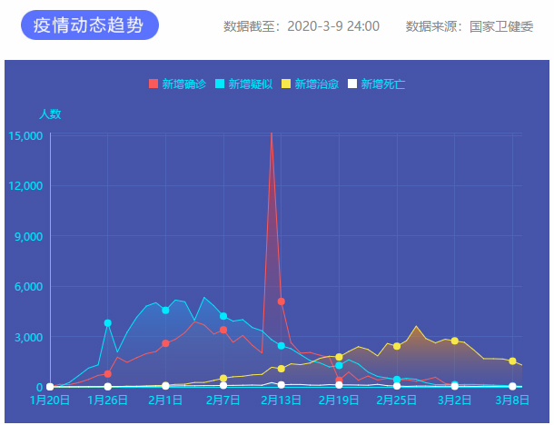

资讯详情
原文链接 备份链接 叶青武汉日记：感谢武汉人民 6377 来源：正和岛 作者：叶青 03-09正在打榜，当前第1 [ …
叶青武汉日记：有中国的经验，不必“从零开始”
 6341
6341
来源：正和岛
作者：叶青
03-10正在打榜，当前第2
[
观察者网

上海观察者信息技术有限公司 媒体
](https://archive.ph/o/kVyZH/mp.zhisland.com/wmp/user/personal/other/home?uid=6566863591641710597)
推荐人

1、数字
9日，周一，雨。9日，全国新增确诊病例19例，新增死亡病例17例（湖北17例），新增疑似病例36例。
截至9日，全国现有确诊病例17721例（其中重症病例4794例），累计治愈出院病例59897例，累计死亡病例3136例，累计报告确诊病例80754例，现有疑似病例349例。

湖北新增确诊病例17例（武汉17例，8日是36例），新增治愈出院病例1152例（武汉896例），新增死亡病例17例（武汉16例，8日是18例），现有确诊病例17151例（武汉15732例），其中重症病例4701例（武汉4471例）。累计治愈出院病例47585例（武汉31829例），累计死亡病例3024例（武汉2404例），累计确诊病例67760例（武汉49965例）。新增疑似病例13例（武汉12例），现有疑似病例246例（武汉230例，8日是253例）。武汉的各类数字，都在大幅度下降。
9日，新增报告境外输入确诊病例2例。截至9日，累计报告境外输入确诊病例69例。
截至欧洲中部时间3月9日上午10时（北京时间17时），中国境外共104个国家/领地/地区确诊新冠肺炎28674例，死亡共计686例（新增202例）。
2、热干面来了
一开始，小区团购里面都是各种菜类团购，如今它们都开始被“打入冷宫”。 如今，团购的渠道多了。有餐饮品牌提供的半成品、成品与原材料团购，这也是餐饮企业自救的方式。 还有中百、盒马这样的超市团，加上超市送货骑手的运力补充，个性化选择不再难。手机里的团购资源，犹如“云”超市。 关键是品种增加，热干面、牛肉粉、豆皮，汉味早点“三员猛将”组成了“早餐”团购主力，饺子、面包、西餐……“正餐团购”中西结合。 我住的小区也是如此，刚刚开始时团购资源主要是小区内的一家综合超市，平时的“货比三家”很难实现。现在小区内有长江严选、各大超市等团购可以选择。 居民的菜篮子丰富起来，团购也能“货比三家”再下单。团购资源丰富了，市民也对团购的不足与改进提出建议。比如，低价储备肉的团购名额比较有限，希望能增加供给数量。 门都不让出了，小朋友去动物园更不可能了。没有关系，动物园直播来了，还带来科普。 3月5日到8日，武汉动物园3场“云春游”直播，累计164万网友观看。他们同央视《正大综艺-动物来了》常驻嘉宾@二宝-杨毅和动物科普达人@花落成蚀，一起云逛武汉动物园。 5日上午， 湿地鸟区的池塘边，一群黑天鹅带着灰色的宝宝吃饲养员饲喂的菜叶子。“黑天鹅很凶猛，不要靠近它们，特别是带着崽子的黑天鹅，它会把人揍得找不着北。”直播间里，动物科普达人@花落成蚀在给网友讲解，“黑天鹅旁边的是大嘴鹈鹕一家，成年鹈鹕是白色的，未成年的是黑色。” 网友们评论表示，宅家参与“云春游”，我们也能加深对动物的了解，学会保护野生动物的理念，认识到人与自然和谐共生的意义。 在此次抗击疫情中，光谷的企业也做出了贡献。 1月27日大年初三至今，东湖高新区产业发展与科技创新局党员干部、科技人员，下沉佛祖岭5大社区防疫一线。 刚到社区，年轻的科技人员就发现，人工呼叫效率太低。于是，委托光谷科技企业武汉鸣鸾公司，即刻开发智能电话摸排小软件“猎星”，1天能摸排一遍，没有联系上的住户再人工上门摸排，做到“不漏一户，不漏一人”。 在佛祖岭B社区，针对疫情防控中全面摸排监控和重点人员轨迹管理的痛点，科技干部通过烽火虹信公司，开发出综治助手智慧系统，在手机上安装综治助手APP，令小区38栋楼、1315户居民的详细信息尽在掌握。 在该社区综治中心的监控大屏上，B社区楼栋情况、人员进出、确诊病例楼栋、疑似病例楼栋等大事小情，均可全天候实时查看。社区南门唯一出入口，进出人员监控管理也应用了人脸识别技术。 为尽量减少人与人接触，光谷多个社区紧急对机器人“招工”，负责门卫测温排查、消杀和送餐工作。 社区机器人，就是由光谷科技企业库柏特加紧研发的。它不仅能通过热成像摄像头进行测温，用柔性机械臂对人精准消毒，发现异常还会发出语音警示。这些监控测量信息，都可通过手机后端系统查看。 这些机器人升级虹膜识别系统。保供人员进出时，只用跟机器人对个眼神，即可记录出入信息。在光谷方舱医院、多个隔离点和酒店，都使用了无接触送饭机器人，给确诊或疑似病患送餐。 佛祖岭D社区住着2293户居民。科创局下沉的3名博士，针对社区居民生活必需品供应最后100米，设计了分菜小程序。分发爱心菜时，能用算法优先分配社区老人。 在流芳社区，引进了由百度、华为和中国移动提供技术支持的“社区团购无人运输车”。该车由北京新石器公司研发，社区居民通过手机APP下单，购买的物资由无人运输车从村办的同兴购物广场送到居民楼下。 武汉的高科技企业的抗击疫情的产品，应该走向全国，走向世界。 截至8日，全国城乡社区工作者已有53位在疫情防控中因公殉职，其中党员占92.5%。 截至8日，全国各级慈善组织、红十字会接收社会捐赠的资金约292.9亿元，捐赠物资约5.22亿件；全国各级慈善组织、红十字会接收社会累计拨付捐赠资金约239.78亿元，拨付捐赠物资约4.66亿件。 国乒捐出24万美元奖金的事，也值得一提。 在参赛之前，由大满贯马龙牵头，全队一致决定，把大家在这个比赛中获得的全部奖金捐给武汉。在卡塔尔训练的这一个月，中国乒协海外购置了60万个医用外科口罩运回武汉。因伤退赛的广州籍奥运冠军刘诗雯主动捐出了与女单冠军等额的4.4万美元善款。
3、各地的扶持政策在落地
截至9日24时，全省低风险市县45个，中风险市县19个，高风险市县12个。 与7日相比，全省新增加8个低风险市区（咸丰县、江陵县、崇阳县、丹江口市、松滋市、嘉鱼县、随县、大冶市），5个高风险市区调至中风险（荆州市城区、监利县、十堰市城区、孝昌县、随州市城区）。 高风险（12个）：天门市、大悟县、潜江市、阳新县、洪湖市、黄冈市城区、云梦县、安陆市、鄂州市城区、应城市、汉川市、武汉市城区。 高风险地区在减少，复工的希望越来越大。 湖北之外，扶持政策落实的怎么样？这也是湖北人关心的问题。 上海市国资委发布消息：目前房租减免工作正在全面有序推进中。截至8日，上海市国有企业共受理1.4万户中小企业的减免申请，涉及承租面积980万平方米，申请减免租金约12亿元。 上海这样，武汉应该不远了。
4、善良的父母
在汉援助的医护人员中的妈妈们，在病毒的包围之下，最关心的还是孩子的学习。 为上初中的女儿介绍武汉大学，鼓励她努力学习，将来考上武汉大学。武汉大学校长立刻给小姑娘写去鼓励信。 护士任换男也是一名母亲，她把自己七岁儿子的名字写在了防护服上。

还有一位妈妈医护人员，儿子今年要考大学了，把儿子的名字写在防护服上，鼓励儿子加油。为了视频时方便儿子辨认自己，援鄂护士在防护服上写“黄义炀妈妈”。一名医护人员是卓尔的球迷。之前看到有医生在防护服上写着“国安是冠军”，所以特意让同事在防护服上写了“卓尔不凡”。二年级同学今年一定要加油啊！疫情结束后，我还要带儿子去现场看你们的中超联赛！李铁在国家队也辛苦了！中国队加油！随后，卓尔官微转发此条微博并写道：致敬白衣天使！期待春暖花开之时，我们继续并肩为武汉而战！此刻我们并肩为武汉而战！疫情结束后，我们将提供套票，邀请您和儿子来到现场看球！国足新帅李铁得知消息后也在个人微博中写道：也欢迎您带着儿子来看中国队的主场比赛！每每看到这些，都会让人感动的流泪。下面这个故事更是如此。“三八妇女节到了，你有什么愿望？”中南大学湘雅医院第三批支援湖北医疗队队员吴宇听到这个问题，脑海中浮现出了每天在家等着和自己视频的儿子，她脱口而出了一句：“给我崽许愿，希望他的偶像梅西可以送他一件球衣。”吴宇说，儿子六岁那年看了世界杯的比赛后，告诉父母他想像梅西一样，既做一个自律的专业运动员，又做一个会弹钢琴、多才多艺的邻家大哥哥。而吴宇和丈夫也一直支持着儿子的梦想。这个愿望真的实现了！8日，阿根廷国家足球队官方微博关注和转发了吴宇许愿的视频，并在微博推文中写道：“护士妈妈您好，我们是阿根廷足协中国办公室，听到你的愿望，我们给你送上一件阿根廷国家队的十号梅西球衣，希望您的儿子穿上偶像战袍之后，未来人生更加勇敢！拥有美好前程！我们的工作人员会想办法跟您取得联系！”凌晨时分，走出病房的吴宇收到了亲朋好友的信息，她说，“一开始只是想鼓励孩子，没想到真的可以实现这个愿望！”吴宇说，自己之所以报名来到武汉，也是想要给儿子做一个榜样，告诉他任何困境都难不倒一颗奋发努力的心。善良的故事还在延续。再一次让武汉人感动。湖南腾跃体育产业发展有限公司董事长谭迪表态，卢澍春节前报名参加腾跃体育的足球训练，腾跃体育已与卢澍家长约好，10日晚上门退费并赠送训练装备。谭迪介绍，腾跃体育早在3月2日就发出公告，所有医务人员的子女可在2020年内免费参加一个学期的足球周末班培训。同时，腾跃体育旗下足球馆在2020年内面向所有医务人员免费开放。这些善良的父母，是孩子的榜样。是我们武汉人感恩的对象。谢谢你们！
5、巴铁，有困难一起扛
9日，中国政府向巴基斯坦提供应对蝗虫灾害紧急援助项目的首批物资抵达巴基斯坦。 此前，中国疫情发生后，巴基斯坦第一时间送来30万只医用口罩和其它防护装备，这是他们尽全力从全国所有公立医院调集来的库存。今天，中国赠送了灭虫设备14台、灭虫药剂250桶，还有新冠肺炎检测试剂盒1.4万份，合计重量69.91吨。 网友说，“感谢巴铁掏家底的援助，兄弟来了！” 钟南山：估计全球疫情这个发展，至少延续到6月份。新冠病毒的防控的重点将来会从输出转为输入。他说过的“4月以前，武汉会结束”，希望目标实现。 8日，为统筹做好抗击疫情涉外工作，集中力量防范境外疫情输入风险，外交部正式成立防范境外疫情输入风险应急中心。应急中心将积极开展各项领事保护工作，加强海外同胞抗疫防护能力，切实保障中国公民正当合法权益。 目前，韩国、日本、伊朗、意大利等国所采取的各级校园停课、暂停人员聚集活动等防控措施都曾在中国被证实有效。 正如世卫组织赴中国考察专家组外方组长、世卫组织总干事高级顾问布鲁斯·艾尔沃德接受记者专访时指出，中国所采取的疫情防控措施为世界树立了标准，有中国的经验，其他国家不必“从零开始”。 确实如此。 比如，伊朗首都德黑兰装备8个针对疫情的危机避难所。共配有600个隔离床位。伊朗疫情严重的多个省份宣布征用展览中心、停工工厂等场地建设临时“方舱医院”。 意大利9日晚间宣布，将从10日开始在全国范围内实行封城禁令，学校停课时间延长至4月3日。3月8日凌晨实施的封城令扩大到全国范围。 所有居民不得随意进出城市（除工作、紧急情况或医疗状况），出入城市须提供自述声明。同时，全国暂停全部体育赛事。 武汉人看了，仿佛回到40多天前。 中国驻韩国大使馆新闻发言人9日表示，中方将于10日起向韩国出口口罩，首批500万只，包括普通医用口罩和N95口罩。 中国的制造业要为世界抗疫服务了。
6、小结
世界各国的现在，就是中国的昨天。
经历的失去亲人的中国人，不会吝啬自己的经验和口罩。
[
以上文章内容，不代表正和岛平台观点
内容授权、投诉请联系neirong@zhisland.com
 举报内容
举报内容
](#)[](#)

原文链接 备份链接 叶青武汉日记：感谢武汉人民 6377 来源：正和岛 作者：叶青 03-09正在打榜，当前第1 [ …
原文链接 备份链接 河内被封锁的街区。图片来源：VnExpress 记者：肖恩 “ 越南副总理武德詹表示，越南已制定好应对各种不同情况的计划，包括国内确诊患者达到上千人的情况，未来几天新增病例可能有几十甚至几百例。 ” 2月底，在全球多国 …
原文链接 备份链接 【财新网】（记者 丁捷 综合）全国治愈出院患者持续增加，疫情正得到有效遏制，武汉正在“走出至暗时刻”。但随着海外疫区回国人员数量增多，疫情回流的风险攀升，中国境外输入病例达到60例。另一方面，复工和防控陷入两难。非新冠 …
原文链接 备份链接 叶青武汉日记：武汉新增病例终于是两位数 6315 来源：正和岛 作者：叶青 03-07正在打榜，当前第2 [ …
原文链接 备份链接 澎湃新闻记者 高宇婷 马作鹏 实习生 李彤 3月6日，武汉的新冠肺炎新增确诊病例自1月27日以来首度降至两位数，距离武汉封城，过去了44天。 根据湖北省卫健委3月7日发布的数据，截至3月6日24时，湖北新增新冠肺炎确诊 …